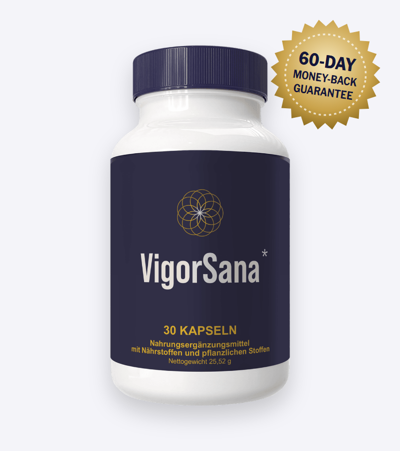
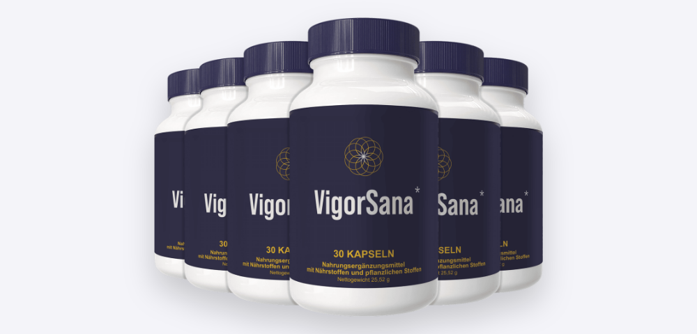
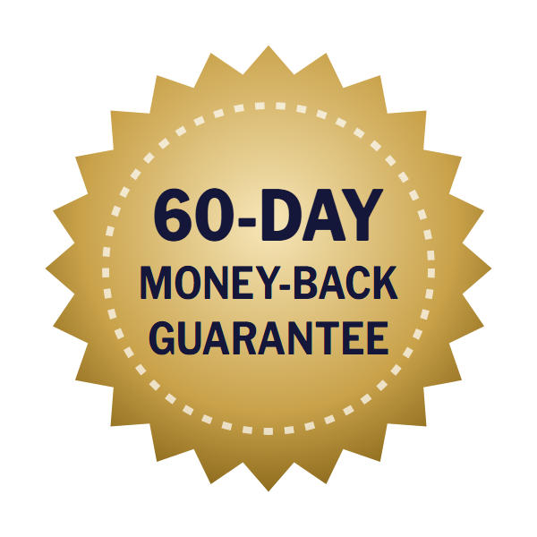

Energy
L-carnitine helps carry fat into cells to be burned for energy; niacin is a building block of NAD+ and reduces tiredness.*
The complete VigorSana formula, how each dose compares with published studies, and what to know before you order

VigorSana is a men's supplement sold online in Europe for "energy, vitality and self-confidence" in men over 40. Unlike many products in this category, its sales page lists every ingredient with its dose: L-carnitine, niacin, L-citrulline, pine bark extract, zinc, maca and saffron in one capsule a day.
That transparency lets us do something we often can't: compare each VigorSana dose with the amounts used in research. In this VigorSana review we do exactly that, explain the "Dr. Eric Wood" story behind the ad, cover safety and lay out the current euro prices and how to order.
VigorSana is a dark-blue bottle of 30 vegan capsules labeled "Nahrungsergänzungsmittel" (dietary supplement). It's sold on a German-language sales page aimed at men over 40, promising more energy, a clearer head and "male vitality" through a "4-phase formula."
The page is presented as an open letter from "Dr. Eric Wood, ND," described as a naturopath trained at Harvard Medical School, who says he has seen the blood tests of 12,000 men. However, the website's own disclaimer states that speakers on the site may be fictional people using pseudonyms — so we treat the story as advertising.
What sets VigorSana apart is that the sales page lists every ingredient with its exact dose, including its form (for example, zinc oxide) and the percentage of the EU daily reference value. That's more than most supplements in this category disclose.
VigorSana is a food supplement, not a medicine for erectile dysfunction or low testosterone.
L-carnitine helps carry fat into cells to be burned for energy; niacin is a building block of NAD+ and reduces tiredness.*
L-citrulline converts to arginine and then nitric oxide, which relaxes blood vessels; pine bark extract supports the same pathway.*
Zinc supports normal testosterone levels, while maca and saffron are studied for libido and mood.*
The mechanisms are well established — nitric oxide is central to erections, which is how prescription PDE5 inhibitors work too. The question for any supplement is whether the doses are large enough to matter, and that's where VigorSana's published label is useful.
The complete VigorSana formula as published on the official sales page. Daily serving: one capsule.
| Ingredient (per capsule) | Dose | What it does |
|---|---|---|
| L-carnitine | 150 mg | Fat transport into cells for energy |
| L-citrulline | 150 mg | Raises arginine and nitric oxide for blood flow |
| Pine bark extract | 100 mg | Antioxidant; supports nitric oxide production |
| Maca | 50 mg | Peruvian root studied for desire and energy |
| Niacin (vitamin B3) | 20 mg (125% NRV) | Reduces tiredness; nervous system function |
| Zinc (oxide) | 11 mg (110% NRV) | Supports normal testosterone levels |
| Saffron | 5 mg | Mood and sexual function in some studies |
Vegan HPMC capsule shell; free of gluten and lactose according to the seller. NRV = EU nutrient reference value.
The formula adds up to about 486 mg, which fits in one size 00 capsule. Zinc and niacin are present at full daily amounts — sensible, though most people already get enough from their diet. The circulation and libido ingredients, however, are included at small doses.
Our take: credit to VigorSana for publishing the full label. It shows a well-chosen ingredient list at doses well below what most studies used.
| Ingredient | VigorSana | Typical studied dose | What studies found |
|---|---|---|---|
| L-citrulline | 150 mg | 1,500 mg a day | Improved erection hardness in men with mild ED (small trial) |
| Pine bark + arginine | 100 mg pine bark (no arginine) | 40–120 mg pine bark + 1.7 g arginine | Combination improved erectile function in several trials |
| Maca | 50 mg | 1,500–3,000 mg | Modest improvement in sexual desire |
| Saffron | 5 mg | 30 mg | Helped antidepressant-related sexual problems |
| L-carnitine | 150 mg | 1,000–4,000 mg | Small effects on fatigue and sperm quality |
| Zinc | 11 mg | 11–30 mg | Raises testosterone only if zinc deficient |
| Niacin | 20 mg | 14–16 mg daily need | Prevents deficiency; no extra effect above that |
The sales page cites a study where a combination "restored normal function in 92.5% of men." That figure comes from research on pine bark extract combined with about 1.7 grams of arginine a day. VigorSana contains no arginine and 150 mg of citrulline, so it can't be assumed to reproduce that result.
For most of the active ingredients, VigorSana provides roughly 3–10% of the studied amounts. The tingling some buyers describe is likely the niacin flush, not a sign of improved circulation.
The testimonials ("Michael K., 54, engineer, Stuttgart") are presented without verification, and the disclaimer notes that names may have been changed.
Low energy and changes in sexual function after 40 are common, and most causes are treatable. These steps have far stronger evidence than any supplement:
A blood test can find low testosterone, thyroid problems, anemia, vitamin D or B12 deficiency, high blood sugar or high cholesterol. Erection problems in particular can be an early warning sign of heart disease.
Aerobic exercise and strength training improve blood flow, testosterone and erectile function — in some studies as much as medication for mild problems.
Abdominal fat lowers testosterone and raises inflammation; even 5–10% weight loss helps.
Testosterone is produced mostly during sleep. Snoring and daytime tiredness can signal sleep apnea, which is treatable.
Both damage blood vessels and lower sexual function.
Prescription PDE5 inhibitors are effective and safe for most men, and testosterone therapy helps men with confirmed low levels.
Possible benefits based on the published formula.*
Niacin at 125% of the daily value helps reduce tiredness if your intake is low.*
Zinc supports normal testosterone levels — most helpful if you're deficient.*
Citrulline and pine bark support nitric oxide, though at low doses.*
Seven disclosed ingredients in one vegan capsule a day.
Give it at least six to eight weeks alongside exercise and sleep improvements, and decide before the 60-day guarantee ends.
At these doses, VigorSana's ingredients are unlikely to cause serious problems for healthy men. The main cautions involve blood pressure and heart medicines.
VigorSana deserves credit for transparency: you can see exactly what's in each capsule. That same label shows the weakness — the circulation and libido ingredients are present at a fraction of the doses that showed effects in studies, so any benefit is likely to be mild.
If you want a simple daily zinc-and-niacin formula with a few extras and you're comfortable with the price, the 60-day guarantee makes it low-risk. If erection problems are your main concern, a doctor's visit is the better first step — both for effective treatment and because it can reveal heart or blood sugar problems early.
Visit the VigorSana Official Website| Option | What it offers | Typical cost | Evidence |
|---|---|---|---|
| VigorSana | 7-ingredient low-dose formula | €49–€69 a month | Ingredient-level, low doses |
| L-citrulline powder | 1.5–3 g a day | €10–€20 a month | Small trials in mild ED |
| Regular exercise | Blood flow, testosterone | Free | Strong |
| Doctor check-up | Finds treatable causes | Usually covered | Essential |
| Prescription PDE5 inhibitors | Direct effect on erections | Varies | Strong |
VigorSana is sold through its own German-language order page. To get the genuine product and the guarantee:
Each VigorSana bottle is a 30-day supply, covered by the 60-day money-back guarantee.
30-Day Supply
€69/bottle
No bonuses
180-Day Supply
€49/bottle
Biggest saving
90-Day Supply
€59/bottle
+ 2 free e-books
Prices checked on the official order page on October 26, 2026 and may change. Bonuses with 3 bottles: "The Testosterone Nutrition Plan" and "5 Exercises for Potency" e-books. One-time payment.


VigorSana comes with a 60-day "empty bottle" guarantee. The seller says that if you're not satisfied, you can email support within 60 days and send the bottles back — even if they're completely empty — for a 100% refund of the purchase price.
Ask support for the return address before sending anything, and keep proof of postage.
Try VigorSana Risk-FreeVigorSana is a men's dietary supplement sold in Europe for energy, circulation and male vitality. Each vegan capsule contains 150 mg L-carnitine, 150 mg L-citrulline, 100 mg pine bark extract, 50 mg maca, 20 mg niacin, 11 mg zinc and 5 mg saffron. One bottle holds 30 capsules, a one-month supply.
There are no published studies on VigorSana itself. Its ingredients have research behind them, but most studies used much higher doses — for example 1.5 g of L-citrulline, 1.5 to 3 g of maca and 30 mg of saffron a day. Zinc and niacin help mainly if you're low in them. Expect a mild effect at most.
The VigorSana sales letter is written in the voice of "Dr. Eric Wood, ND." The website's own disclaimer states that speakers on the site may be fictional persons using pseudonyms, so the doctor story and patient anecdotes should be treated as marketing rather than verified endorsements.
On the official website VigorSana costs €69 for one bottle plus €9 shipping, €177 for three bottles (€59 each) and €294 for six bottles (€49 each). The three-bottle package includes two free e-books.
Take one capsule a day with water. The seller says the capsules can be opened and the powder mixed into water, yogurt or a protein shake.
Niacin can cause a warm, tingling flush; L-citrulline and pine bark may lower blood pressure slightly; zinc can cause nausea on an empty stomach. Take it with food, and talk to a doctor first if you take blood pressure medicine, nitrates or blood thinners.
Ask your doctor first. L-citrulline and pine bark extract can lower blood pressure, and combining them with PDE5 inhibitors (such as sildenafil), nitrates or blood pressure drugs may add to that effect.
Not in the hormonal sense. Zinc supports normal testosterone levels in men who are deficient, and maca may improve desire in some studies, but none of the ingredients has been shown to raise testosterone in men with normal levels.
VigorSana is marketed on a German-language website for European customers, with prices in euros. Check the order page for delivery options to your country.
No. The order page offers one-time purchases of 1, 3 or 6 bottles.
VigorSana has a 60-day money-back guarantee. The seller says you can email support and return the bottles — even empty ones — within 60 days for a full refund of the purchase price.
See a doctor if problems last more than a few weeks. Erection problems can be an early sign of heart disease, diabetes or high blood pressure, and low energy can come from low testosterone, thyroid problems, anemia or sleep apnea — all treatable.
Get VigorSana for as little as €49 per bottle on the 6-bottle package, with discreet shipping and a 60-day money-back guarantee — even on empty bottles.
Order VigorSana Now